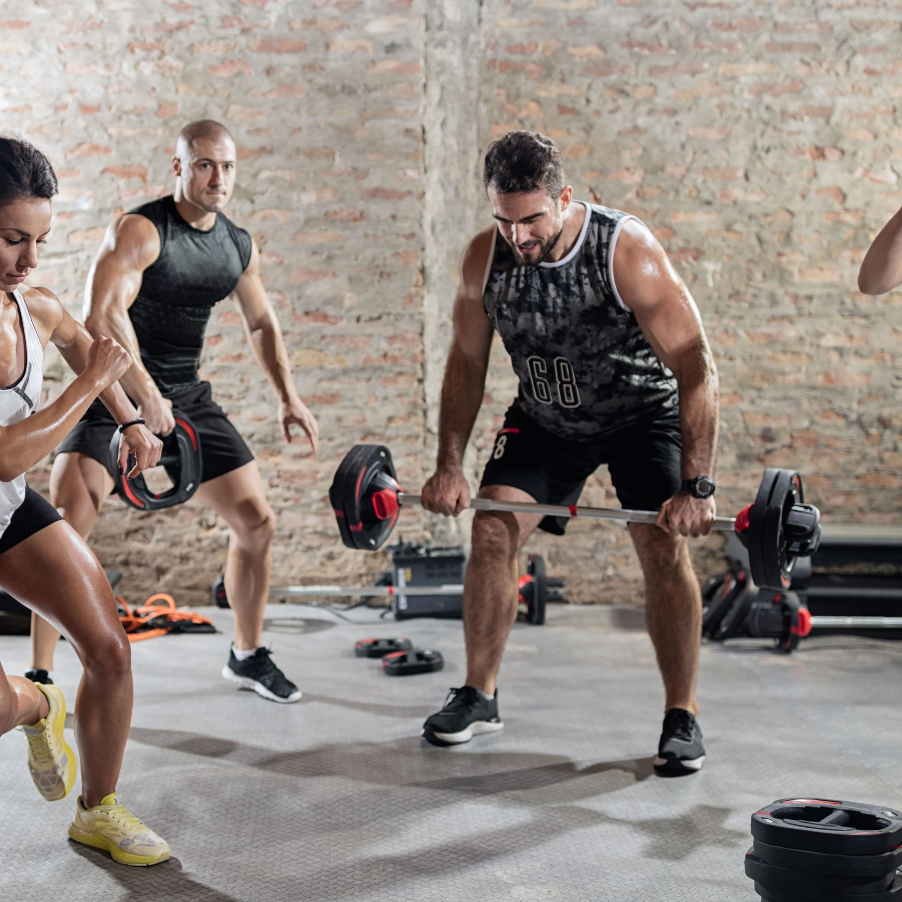

Plan de entrenamiento:
El objetivo de un programa de entrenamiento es mejorar la condición, la constitución y la naturaleza del cuerpo en cuanto a flexibilidad, fuerza, potencia, resistencia, equilibrio, agilidad, coordinación y energía. Permite mejorar el funcionamiento del sistema neuromuscular, aumentar la tensión muscular, y mejorar los tiempos de acción y reaccion. Un programa de entrenamiento tiene que respetar la fisiología muscular, en lo relativo a la flexibilidad y limitaciones, de cada persona con el fin de obtener el mejor resultado posible.